Recommendations, in priority order
- Lead the re-pricing: move the annuity book to outcome pricing before clients force it.
- Turn alliances into certified capacity: fewer platforms, named and certified delivery teams.
- Win share, not just deals: AI-led operations, GCC takeovers and scale M&A.
- Manage “net-new AI”: run and report the business on core growth, not the AI revenue line.
Part of a three-project series
1. CI Tracker
What firms announce. Dashboard
What firms announce. Dashboard
2. Market Analytics
What shows up as revenue. Dashboard
What shows up as revenue. Dashboard
3. Consulting Report
What a leader should do. This page.
What a leader should do. This page.
The deck
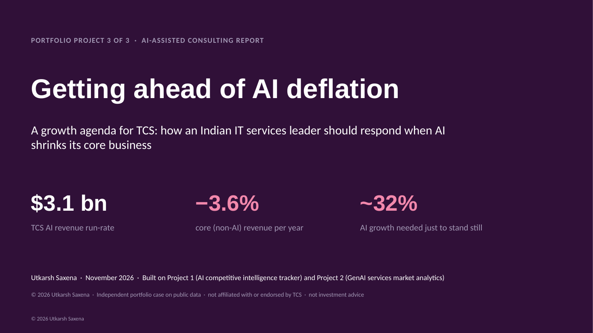
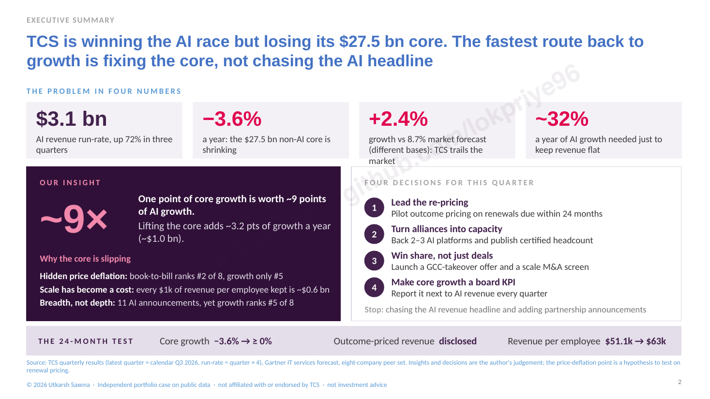
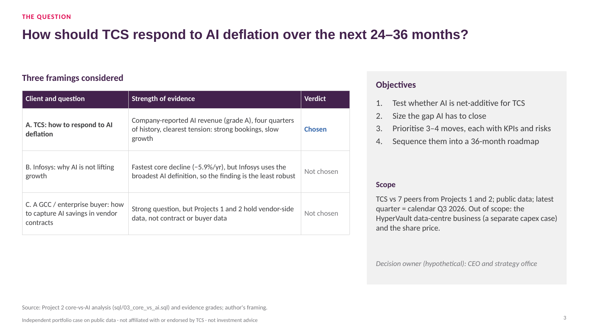
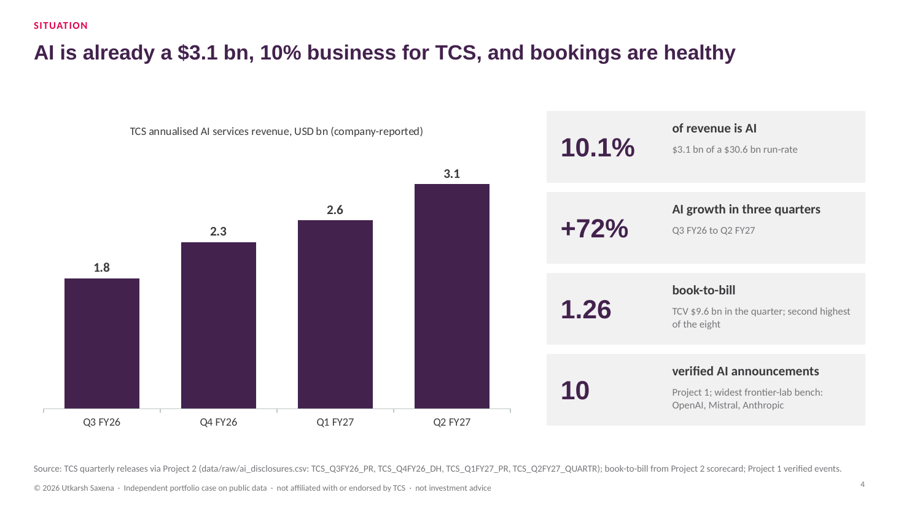
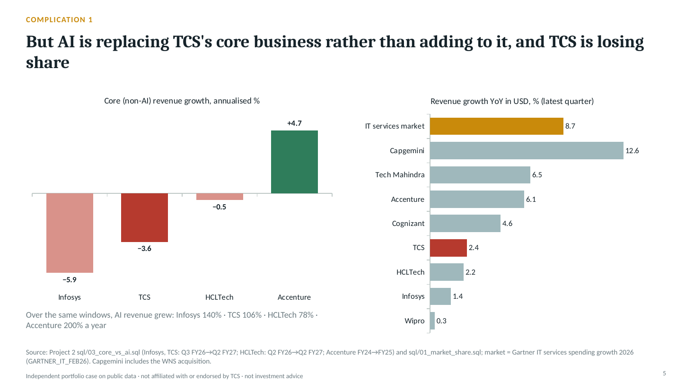
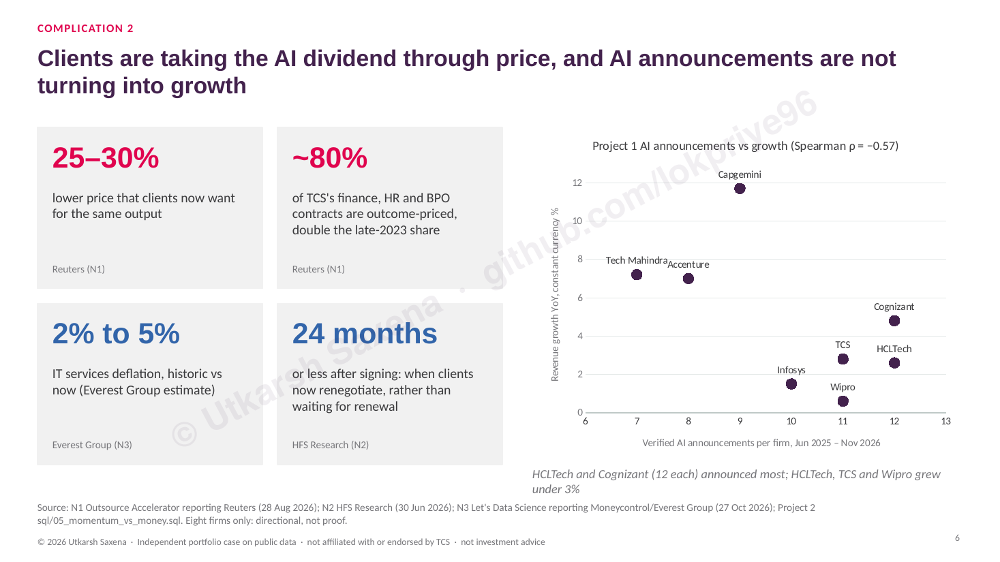
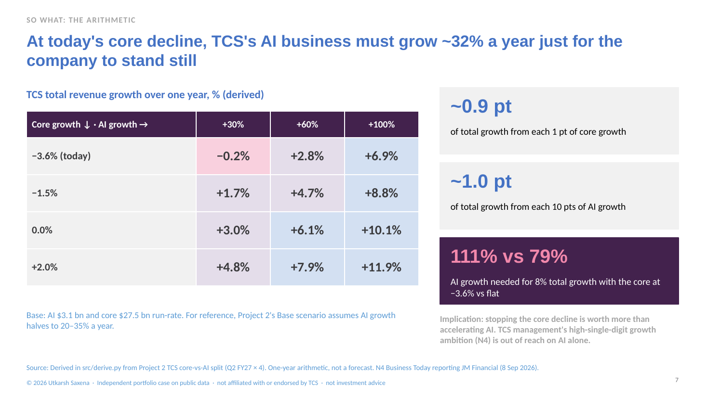
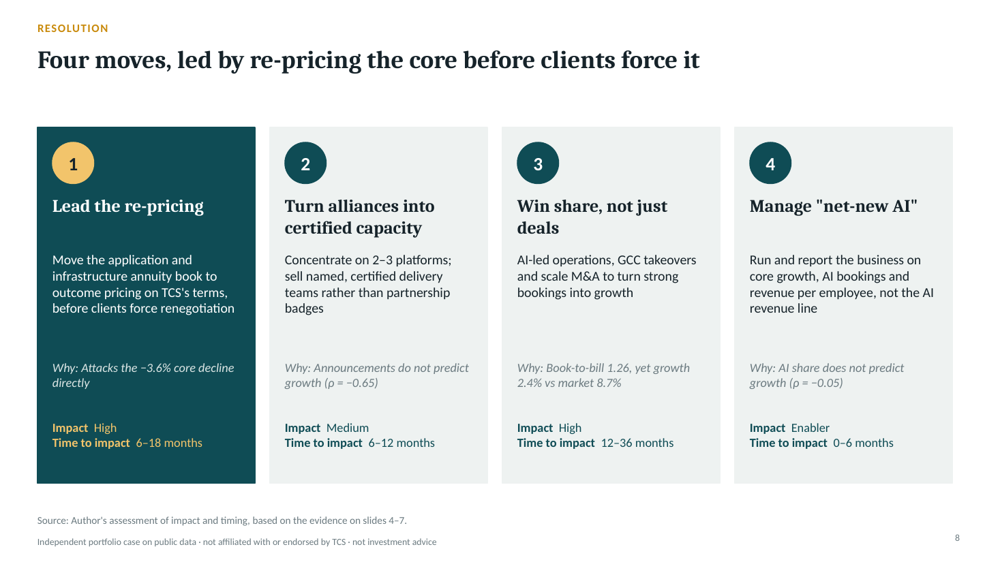
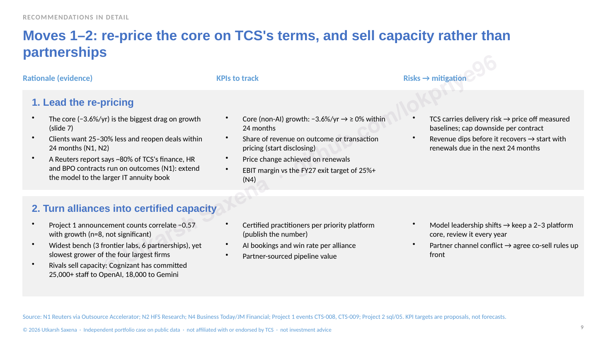
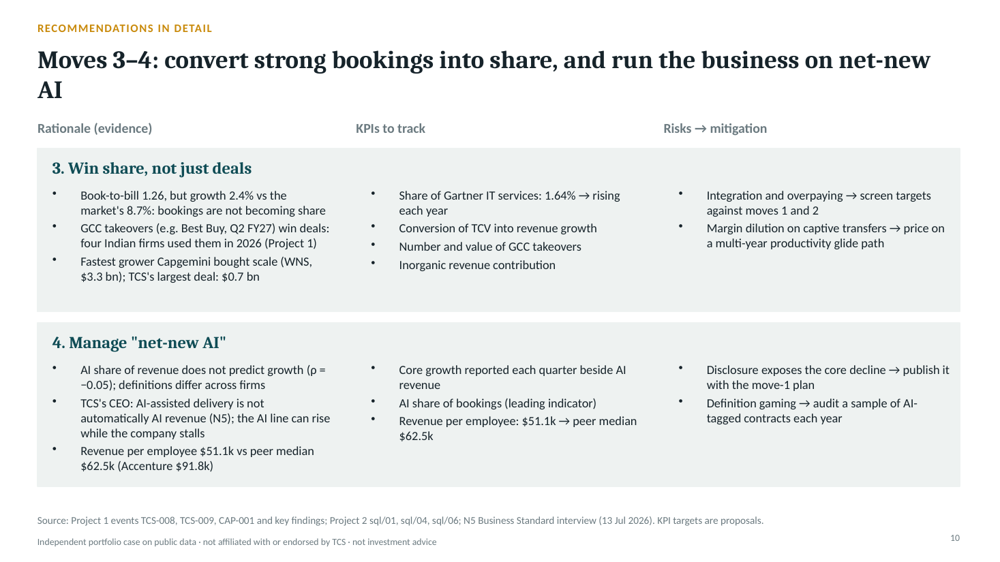
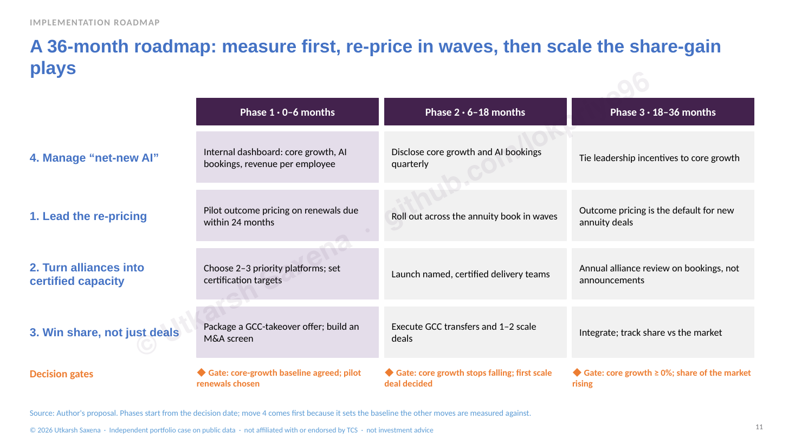
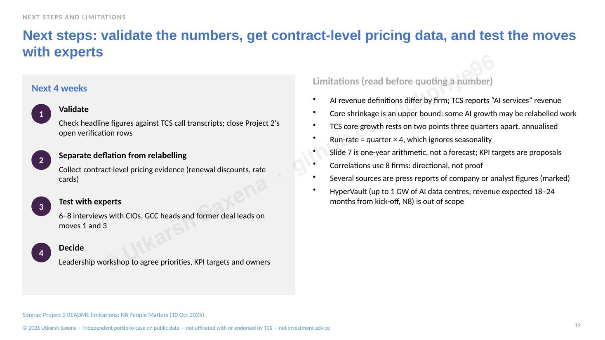
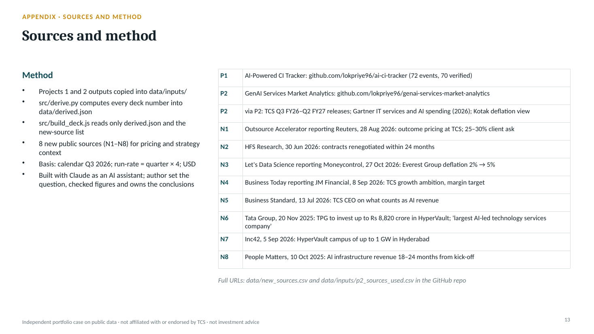